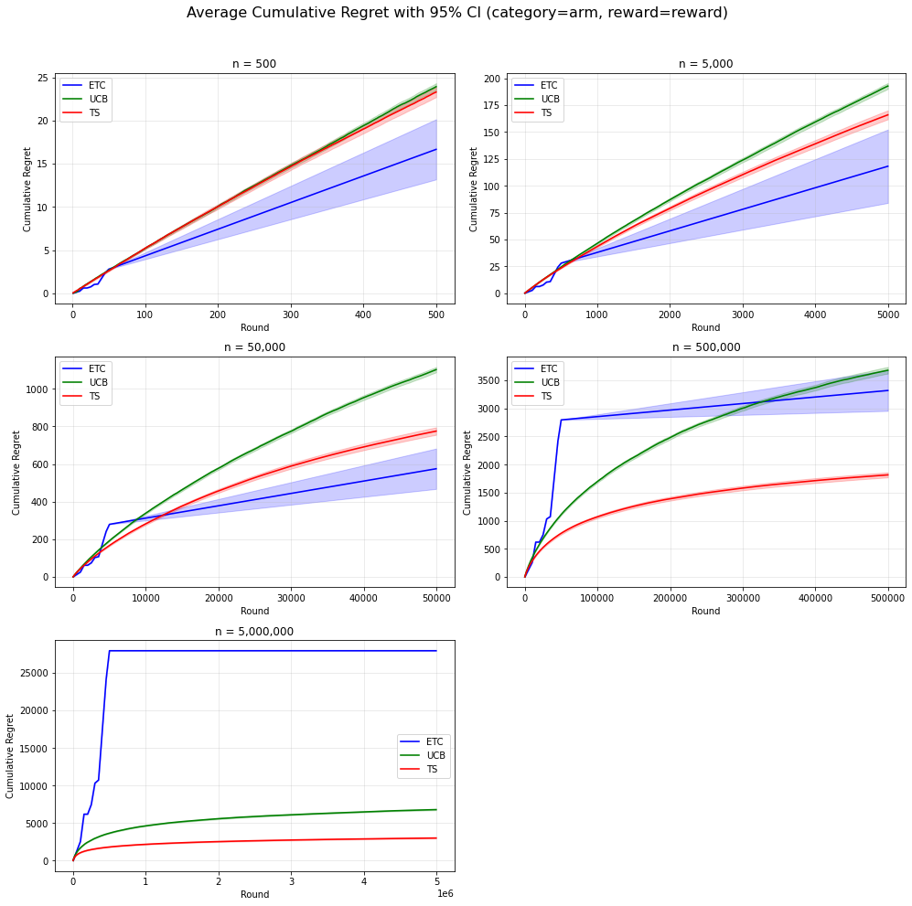
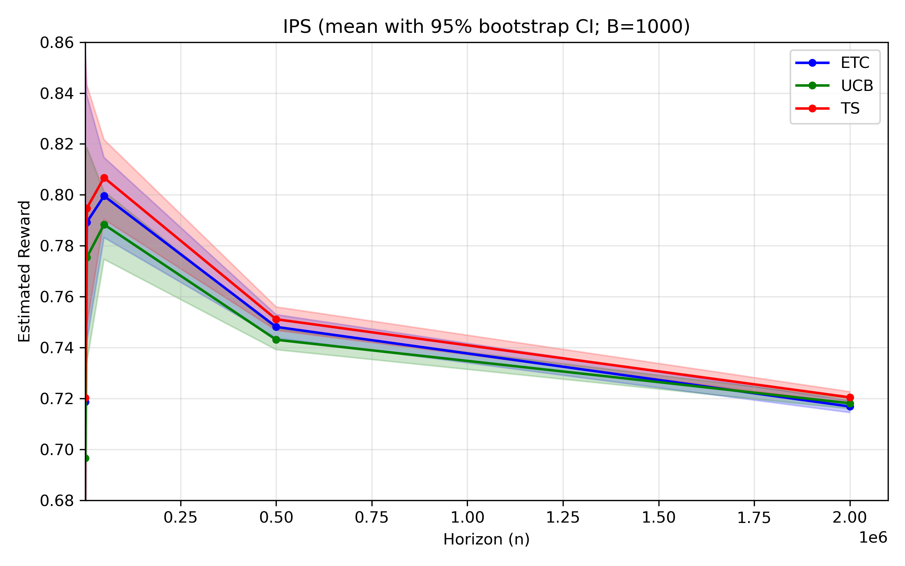
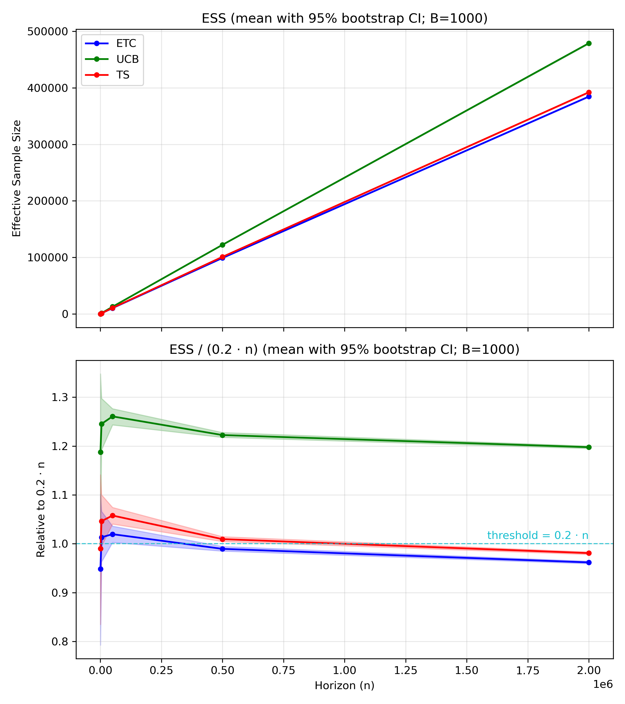
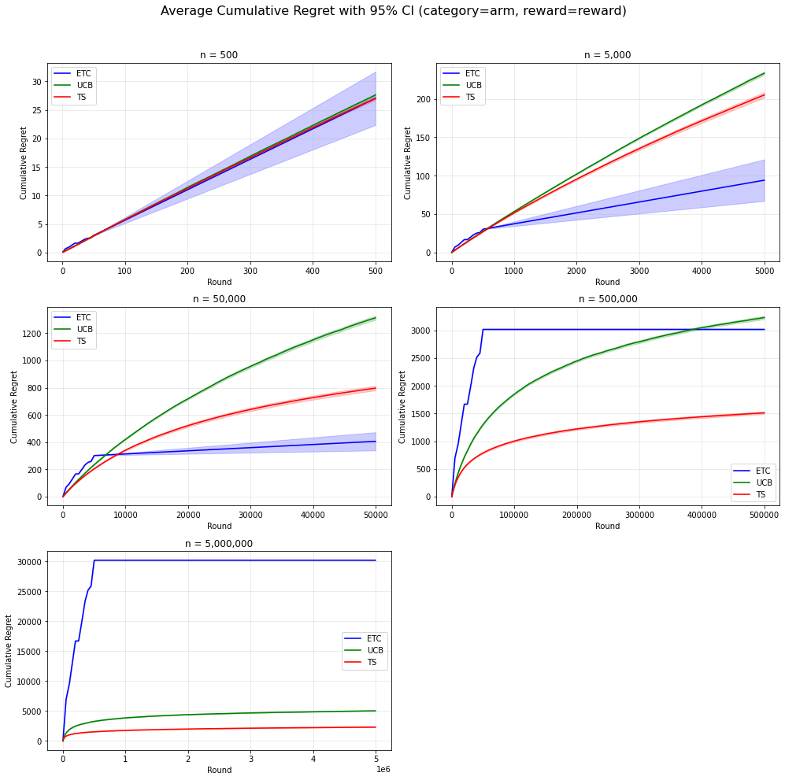

ETC, UCB, Thompson Sampling
I compared three classical bandit algorithms under the same arm and reward construction, then evaluated both their online regret trajectories and offline IPS estimates.
Technical note
I tested whether inverse propensity scoring can act as an offline proxy for cumulative regret when comparing Explore-Then-Commit, UCB, and Thompson Sampling on logged recommendation-style data.
Cumulative regret is the natural online metric for bandit algorithms, but it requires interaction or simulation. IPS can be computed from logged feedback, but it estimates a stationary-policy reward level rather than the dynamic cost of exploration. The project asks where those two views agree and where they separate.
I compared three classical bandit algorithms under the same arm and reward construction, then evaluated both their online regret trajectories and offline IPS estimates.
Arms were built from the ten most frequent categories or genres, with ratings normalized to rewards in [0, 1]. Train/evaluation splits separated policy construction from offline evaluation.
Bootstrap confidence intervals and effective sample size checked reliability, while top-1, pairwise, and full-ordering agreement tested whether IPS preserved regret-based rankings.
IPS is useful as an offline proxy, but it does not reliably replace regret. The point estimates sometimes agree with regret, especially at longer horizons, yet confidence intervals often overlap and full algorithm ordering is rarely preserved.




IPS answers a different question from regret: it estimates reward under an evaluation policy, while regret measures the dynamic cost of exploration. In this experiment, IPS worked as a useful offline signal, but the overlapping intervals and ordering mismatches mean it should complement regret rather than replace it.